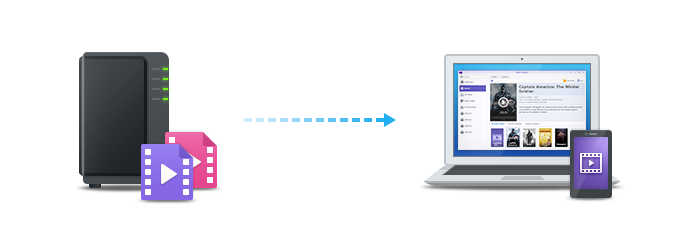
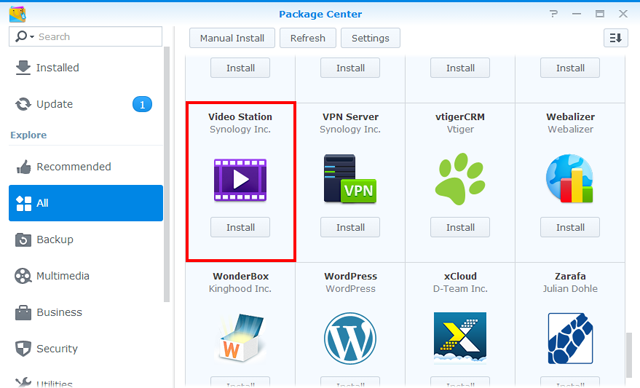
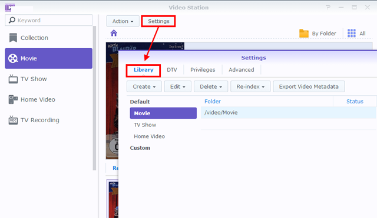
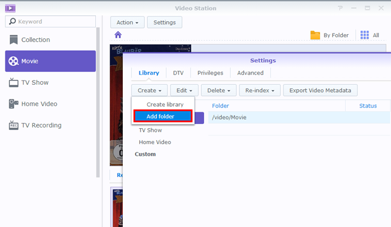
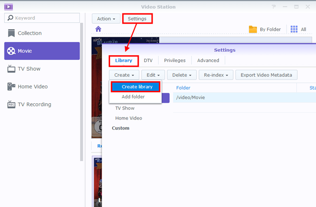
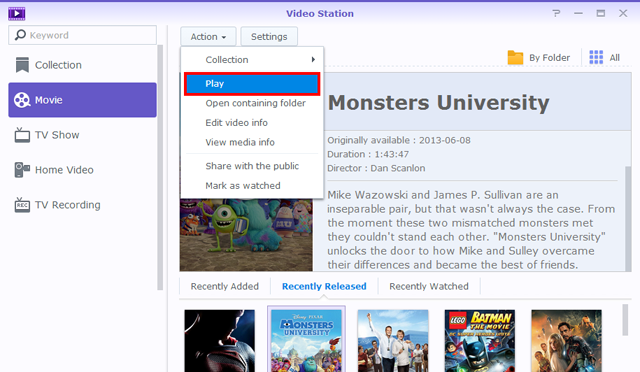
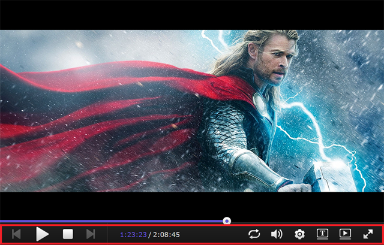
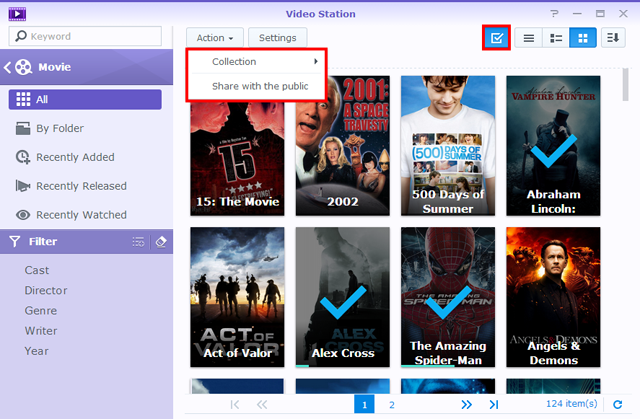
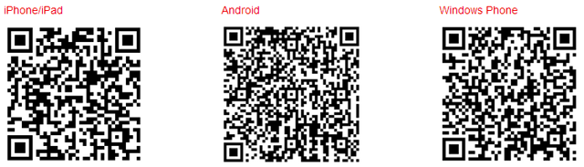

Oversigt
Med Video Station kan du nemt organisere og kategorisere dine videosamlinger i forskellige standard eller tilpassede biblioteker, så det er lettere at finde en bestemt video. Derudover kan du afspille og dele videoer med blot nogle få klik.
1. Installer Video Station
Hvis du vil installere Video Station skal du gå til Pakkecenter, finde Video Station og klikke på Installer.

2. Gem og organiser videoer i standard biblioteker
Video Station har tre standard biblioteker, som vist i venstre panel: Film, Tv-show og Hjemmevideo. For at sikre, at dine videoer indekseres og kategoriseres korrekt, skal du først tilføje videomapper til hvert bibliotek, og derefter gemme dine filer i de tilsvarende videomapper. Som standard er der oprettet tre videomapper under den delte mappe video for de tre standardbiblioteker: Film, Tv-show og Hjemmevideo. Ud over disse tre mapper kan du også gøre følgende for at tilføje flere videomapper til bibliotekerne.
Bemærk:
Systemet søger automatisk efter relaterede metadata og andre oplysninger (f.eks. omslagsbillede) på internettet for to videotyper (film og tv-show). For at sikre, at dine videoer kan parres med de korrekte oplysninger, anbefales det på det kraftigste, at videoerne matcher den specificerede videotype i de respektive biblioteker.
Tilføj videomapper til standard biblioteker
- Gå til Indstillinger > Bibliotek.

- Klik på Opret > Tilføj mappe for at vælge en mappe fra din Synology NAS og vælge destinationsbibliotek. Du kan tilføje op til 100 videomapper til et bibliotek, men når en mappe først er oprettet, kan mappen eller og undermapper ikke længere vælges for et andet bibliotek.

- Gem videofiler til videomapper for at kategorisere videoerne i tilsvarende biblioteker.
- Du kan nu gennemgå og se dine ønskede videoer fra bibliotekerne!
3. Gem og organiser videoer i tilpassede biblioteker
Ud over de tre standardbiblioteker, som alle har adgang til som standard, kan du som DSM-admin, såvel som brugere, der tilhører gruppen administrators, også oprette tilpassede biblioteker og tildele adgangstilladelser til brugere.
3.1 Opret tilpassede biblioteker
- Gå til Indstillinger > Bibliotek og klik på Opret > Opret bibliotek.

- Specificer et navn for det nye bibliotek, vælg, hvilken type videoer, du vil lægge i mappen, og vælg derefter Offentlig hvis du ønsker, at alle skal have adgang til biblioteket, eller vælg Privat hvis du vil begrænse adgangen til bestemte brugere, der har tilladelse. Bemærk, at de videoer, du placerer i mappen, skal matche den type, du valgte her for at sikre, at oplysninger, indsamlet fra internettet, er nøjagtige.
- Hvis du vælger Privat, skal du klikke på Tildel tilladelser og markere afkrydsningsfelterne for at give adgang til brugerne.
3.2 Tilføj videomapper til tilpassede biblioteker
- Gå til Indstillinger > Bibliotek.
- Klik på Opret > Tilføj mappe for at vælge en mappe fra din Synology NAS og vælge destinationsbibliotek. Du kan tilføje op til 100 videomapper til et bibliotek, men når en mappe først er oprettet, kan mappen eller og dens undermapper ikke længere vælges for et andet bibliotek.
- Gem videofiler til videomapper for at kategorisere videoerne i tilsvarende biblioteker.
- Du kan nu gennemgå og se dine ønskede videoer fra bibliotekerne!
4. Afspil videoer
Når du har kategoriseret dine videofiler i forskellige biblioteker, kan du følge nedenstående trin for at afspille dine videoer på Video Station. Det anbefales på det kraftigste, at du først installerer VLC-medieafspiller (Windows, Linux) på din computer. Ud over at afspille videoer på din egen computer, kan du også streame dine videoer til DLNA/UPnP-kompatible DMA'er eller AirPlay-kompatible enheder til videoafspilning.
Afspil videoer med den indbyggede videoafspiller
- Vælg et ønsket videoklip og klik på afspilningsikonet på videobilledet, eller klik på Handling > Afspil.

- Videoen skulle begynde at afspille med det samme. Hvis det ikke sker skal du sikre, at videoformatet er understøttet af din webbrowser, eller at du har installeret plugin'et VLC på din computer.
- Brug knapperne på skærmen og statuslinjen nederst på Video Player, hvis det er nødvendigt. Du kan også justere lydstyrken, vælge kvaliteten af videoafspilningen og lydsporet, slå undertekster til eller streame videoen til en anden enhed (om relevant).

Bemærk:
For detaljerede oplysninger om plugin'et VLC og understøttede enheder henvises til DSM - Hjælp > Video Station > Videoafspilning.
5. Del videoer offentligt
Med funktionen til deling offentligt kan du nemt dele dine videoer med andre personer vha. Video Station. Der er adgang til alle videoer delt offentligt af hvem som helst med linket, og det kan styres på siden Samling.
Del videoer med andre
- Gå til et videobibliotek og klik på Alle i øverste, højre hjørne for at vise alle videoerne i dette bibliotek.
- Klik på ikonet Valgtilstand eller tryk og hold ned på Ctrl eller Shift for at vælge flere videoer. Klik derefter på Handling > Del offentligt.
- Hvis du kun har valgt en video til deling, tilføjes videoen til en delt samling kaldet Delte videoer. Her kan du styre alle videoer, du har delt, den ene efter den anden.
- Hvis du har valgt at dele flere videoer, grupperes videoerne i en ny, delt samling.
- Alternativt kan du også klikke på Handling > Samling for at tilføje de valgte videoer til en eksisterende delt samling (om relevant).

- Specificer en gyldighedsperiode, om nødvendigt.
- Kopier ganske enkelt linket ind i e-mails, onlinemeddelelser og websider for at dele dem med andre.
6. Organiser og se videoer på mobilenheder
Du kan oprette forbindelse til Video Station via mobilenheder ved at downloade DS video til iOS/Android-enheder eller Windows Phone med nedenstående QR-kode for at afspille videoer og organisere dine samlinger på dine mobilenheder eller streame videoer til dine DMA'er eller AirPlay-enheder både hjemme og på farten.
